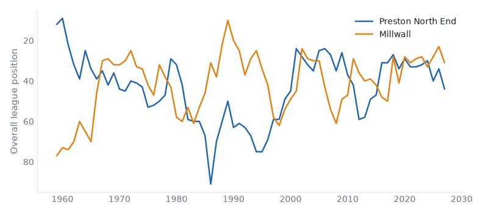
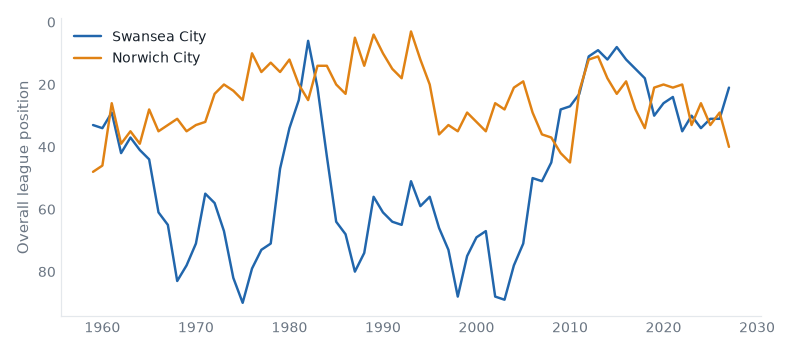

Premier League and Championship, 12 October to 18 October 2026. 34 results.Friday's preview.
Bournemouth v Sunderland: no result on file. Friday's case: 2 above level, neighbours, yo-yo club.
Fulham v Hull: no result on file. Friday's case: above level, yo-yo club, promoted last season.
Swansea v West Ham: no result on file. Friday's case: below level, above level, neighbours, relegated last season.
Brighton v Crystal Palace: no result on file. Friday's case: above level, yo-yo club.
Millwall v Lincoln: no result on file. Friday's case: 2 above level, yo-yo club, champions last season.
West Brom v Blackburn: no result on file. Friday's case: below level, neighbours, yo-yo club.
Brentford v Liverpool: no result on file. Friday's case: 2 above level, yo-yo club.
Wrexham v Preston: no result on file. Friday's case: 2 above level, yo-yo club.
Man City v Ipswich: no result on file. Friday's case: above level, yo-yo club, promoted last season.
Preston 0–1 Millwall compare
Championship, Sat 10 Oct
Preston North End have 4 points from 9 games, their worst start in their record.

Swansea 2–1 Norwich compare
Championship, Sat 10 Oct
Swansea City have 20 points from 9 games, their best start in their record.

Birmingham 4–0 Preston compare
Championship, Tue 13 Oct
Preston North End have 4 points from 10 games, their worst start in their record.
Millwall 0–1 Swansea compare
Championship, Tue 13 Oct
Swansea City have 23 points from 10 games, their best start in their record.
West Ham 1–1 QPR compare
Championship, Fri 09 Oct
Queens Park Rangers have 4 draws in a row, their longest run since 2012/13.
Ipswich 2–1 Fulham compare
Premier League, Sat 10 Oct
Ipswich Town beat Fulham for the first time since 2015/16.
Man United 1–1 Tottenham compare
Premier League, Sat 10 Oct
Manchester United have 6 points from 6 games, their worst start since 1986/87. Tottenham Hotspur have 3 points from 6 games, their worst start since 2008/09.
Sunderland 0–2 Brighton compare
Premier League, Sat 10 Oct
Sunderland have 4 points from 6 games, their worst start since 2016/17.
Middlesbrough 1–0 Wolves compare
Championship, Sat 10 Oct
Middlesbrough beat Wolverhampton Wanderers for the first time since 2015/16.
Sheffield United 3–0 Lincoln compare
Championship, Sat 10 Oct
Sheffield United beat Lincoln City for the first time since 1983/84.
Crystal Palace 3–1 Nott'm Forest compare
Premier League, Sun 11 Oct
Crystal Palace beat Nottingham Forest for the first time since 2011/12.
Southampton 1–0 Portsmouth compare
Championship, Sun 11 Oct
Southampton beat Portsmouth for the first time since 2004/05.
Coventry 4–1 Newcastle compare
Premier League, Mon 12 Oct
Coventry City beat Newcastle United for the first time since 1999/00.
Wolves 1–3 Bolton compare
Championship, Tue 13 Oct
Bolton Wanderers beat Wolverhampton Wanderers for the first time since 2015/16.
Lincoln 0–6 West Ham compare
Championship, Wed 14 Oct
West Ham United have 8 games unbeaten in a row, their longest run since 2015/16.
Norwich 0–1 Southampton compare
Championship, Wed 14 Oct
Southampton have 20 points from 10 games, their best start since 2014/15.
Portsmouth 3–2 Sheffield United compare
Championship, Wed 14 Oct
Portsmouth beat Sheffield United for the first time since 2012/13.
QPR 4–1 Derby compare
Championship, Wed 14 Oct
Queens Park Rangers have 17 points from 10 games, their best start since 2013/14.
| Sat 10 late | Arsenal | 2–1 | Leeds | compare | ||
| Sat 10 late | Aston Villa | 2–2 | Brentford | compare | best start since 2020/21 | |
| Sat 10 late | Chelsea | 5–1 | Bournemouth | compare | ||
| Sat 10 late | Ipswich | 2–1 | Fulham | compare | first win v Fulham since 2015/16 | |
| Sat 10 late | Man United | 1–1 | Tottenham | compare | worst start since 1986/87 | |
| Sat 10 late | Sunderland | 0–2 | Brighton | compare | worst start since 2016/17 | |
| Sun 11 late | Crystal Palace | 3–1 | Nott'm Forest | compare | first win v Nottingham Forest since 2011/12 | |
| Sun 11 late | Hull | 2–2 | Everton | compare | best start since 2021/22 | |
| Sun 11 late | Liverpool | 0–3 | Man City | compare | ||
| Mon 12 | Coventry | 4–1 | Newcastle | compare | first win v Newcastle United since 1999/00 |
| P | W | D | L | GD | Pts | ||
|---|---|---|---|---|---|---|---|
| 1 | Manchester City | 3 | 3 | 0 | 0 | +7 | 9 |
| 2 | Liverpool | 3 | 2 | 1 | 0 | +3 | 7 |
| 3 | Brighton & Hove Albion | 3 | 2 | 0 | 1 | +6 | 6 |
| 4 | Arsenal | 3 | 2 | 0 | 1 | 0 | 6 |
| 5 | Hull City | 3 | 1 | 1 | 1 | 0 | 4 |
| 6 | Leeds United | 3 | 1 | 1 | 1 | 0 | 4 |
| 7 | Crystal Palace | 3 | 1 | 1 | 1 | -1 | 4 |
| 8 | Nottingham Forest | 3 | 1 | 1 | 1 | -1 | 4 |
| 9 | Aston Villa | 3 | 1 | 1 | 1 | -3 | 4 |
| 10 | Brentford | 3 | 0 | 3 | 0 | 0 | 3 |
| 11 | Everton | 3 | 0 | 3 | 0 | 0 | 3 |
| 12 | Chelsea | 3 | 1 | 0 | 2 | -3 | 3 |
| 13 | Coventry City | 3 | 1 | 0 | 2 | -3 | 3 |
| 14 | Ipswich Town | 3 | 1 | 0 | 2 | -3 | 3 |
| 15 | Newcastle United | 3 | 1 | 0 | 2 | -4 | 3 |
| 16 | Manchester United | 3 | 0 | 2 | 1 | -2 | 2 |
| 17 | Tottenham Hotspur | 3 | 0 | 2 | 1 | -3 | 2 |
| 18 | Fulham | 3 | 0 | 1 | 2 | -2 | 1 |
| 19 | Sunderland | 3 | 0 | 1 | 2 | -3 | 1 |
| 20 | Bournemouth | 3 | 0 | 1 | 2 | -5 | 1 |
| Fri 09 late | West Ham | 1–1 | QPR | compare | 4 draws, longest since 2012/13 | |
| Sat 10 late | Blackburn | 2–1 | Cardiff | compare | ||
| Sat 10 late | Bolton | 1–2 | Stoke | compare | first win v Bolton Wanderers since 2018/19 | |
| Sat 10 late | Charlton | 1–1 | Bristol City | compare | ||
| Sat 10 late | Derby | 1–1 | Wrexham | compare | worst start since 2020/21 | |
| Sat 10 late | Middlesbrough | 1–0 | Wolves | compare | first win v Wolverhampton Wanderers since 2015/16 | |
| Sat 10 late | Preston | 0–1 | Millwall | compare | worst start on record | |
| Sat 10 late | Sheffield United | 3–0 | Lincoln | compare | first win v Lincoln City since 1983/84 | |
| Sat 10 late | Swansea | 2–1 | Norwich | compare | best start on record | |
| Sat 10 late | Watford | 0–4 | Burnley | compare | worst start since 2019/20 | |
| Sat 10 late | West Brom | 0–1 | Birmingham | compare | ||
| Sun 11 late | Southampton | 1–0 | Portsmouth | compare | first win v Portsmouth since 2004/05 | |
| Tue 13 | Birmingham | 4–0 | Preston | compare | worst start on record | |
| Tue 13 | Bristol City | 0–1 | Blackburn | compare | ||
| Tue 13 | Burnley | 2–2 | Charlton | compare | ||
| Tue 13 | Cardiff | 5–1 | Watford | compare | worst start since 2019/20 | |
| Tue 13 | Millwall | 0–1 | Swansea | compare | best start on record | |
| Tue 13 | Stoke | 2–3 | Middlesbrough | compare | ||
| Tue 13 | Wolves | 1–3 | Bolton | compare | first win v Wolverhampton Wanderers since 2015/16 | |
| Tue 13 | Wrexham | 1–2 | West Brom | compare | ||
| Wed 14 | Lincoln | 0–6 | West Ham | compare | 8 games unbeaten, longest since 2015/16 | |
| Wed 14 | Norwich | 0–1 | Southampton | compare | best start since 2014/15 | |
| Wed 14 | Portsmouth | 3–2 | Sheffield United | compare | first win v Sheffield United since 2012/13 | |
| Wed 14 | QPR | 4–1 | Derby | compare | best start since 2013/14 |
| P | W | D | L | GD | Pts | ||
|---|---|---|---|---|---|---|---|
| 1 | Swansea City | 5 | 4 | 0 | 1 | +4 | 12 |
| 2 | Birmingham City | 5 | 3 | 1 | 1 | +2 | 10 |
| 3 | West Ham United | 5 | 2 | 3 | 0 | +7 | 9 |
| 4 | Queens Park Rangers | 5 | 2 | 3 | 0 | +3 | 9 |
| 5 | West Bromwich Albion | 5 | 3 | 0 | 2 | 0 | 9 |
| 6 | Lincoln City | 5 | 3 | 0 | 2 | -1 | 9 |
| 7 | Middlesbrough | 5 | 2 | 2 | 1 | +1 | 8 |
| 8 | Bristol City | 5 | 2 | 2 | 1 | 0 | 8 |
| 9 | Wolverhampton Wanderers | 5 | 2 | 1 | 2 | 0 | 7 |
| 10 | Bolton Wanderers | 5 | 2 | 1 | 2 | -2 | 7 |
| 11 | Millwall | 5 | 2 | 1 | 2 | -3 | 7 |
| 12 | Stoke City | 5 | 2 | 1 | 2 | -3 | 7 |
| 13 | Blackburn Rovers | 5 | 1 | 3 | 1 | 0 | 6 |
| 14 | Wrexham | 5 | 1 | 3 | 1 | -3 | 6 |
| 15 | Sheffield United | 5 | 1 | 2 | 2 | -1 | 5 |
| 16 | Southampton | 5 | 1 | 2 | 2 | -1 | 5 |
| 17 | Charlton Athletic | 5 | 1 | 2 | 2 | -5 | 5 |
| 18 | Portsmouth | 4 | 1 | 1 | 2 | 0 | 4 |
| 19 | Burnley | 5 | 1 | 1 | 3 | -3 | 4 |
| 20 | Derby County | 5 | 1 | 1 | 3 | -5 | 4 |
| 21 | Norwich City | 5 | 1 | 0 | 4 | -4 | 3 |
| 22 | Cardiff City | 5 | 0 | 1 | 4 | -5 | 1 |
| 23 | Preston North End | 5 | 0 | 1 | 4 | -7 | 1 |
| 24 | Watford | 5 | 0 | 1 | 4 | -8 | 1 |
Built from the English football database, tiers 1–5 from 1958/59. Results from football-data.co.uk. Archived copy.